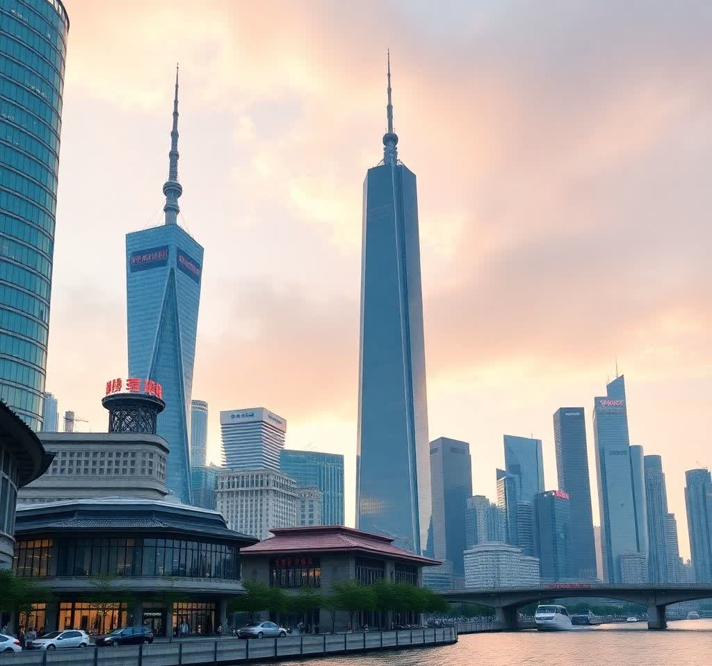
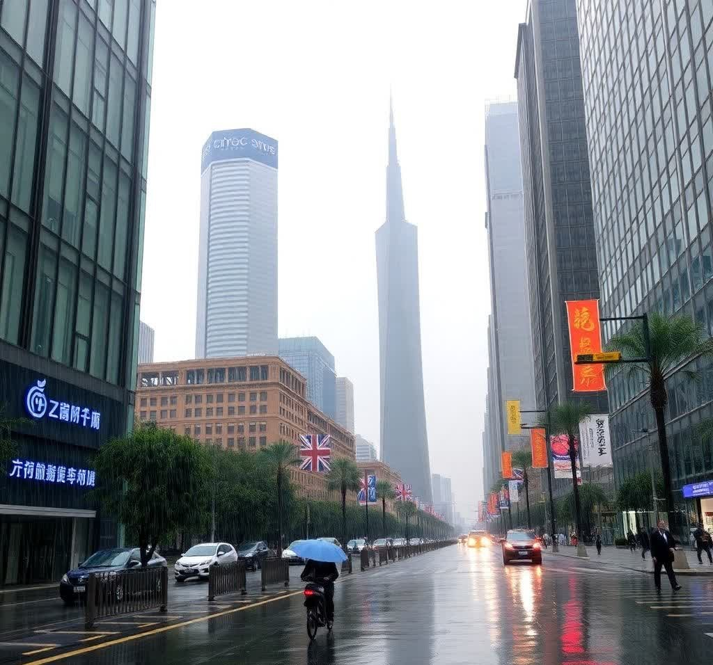
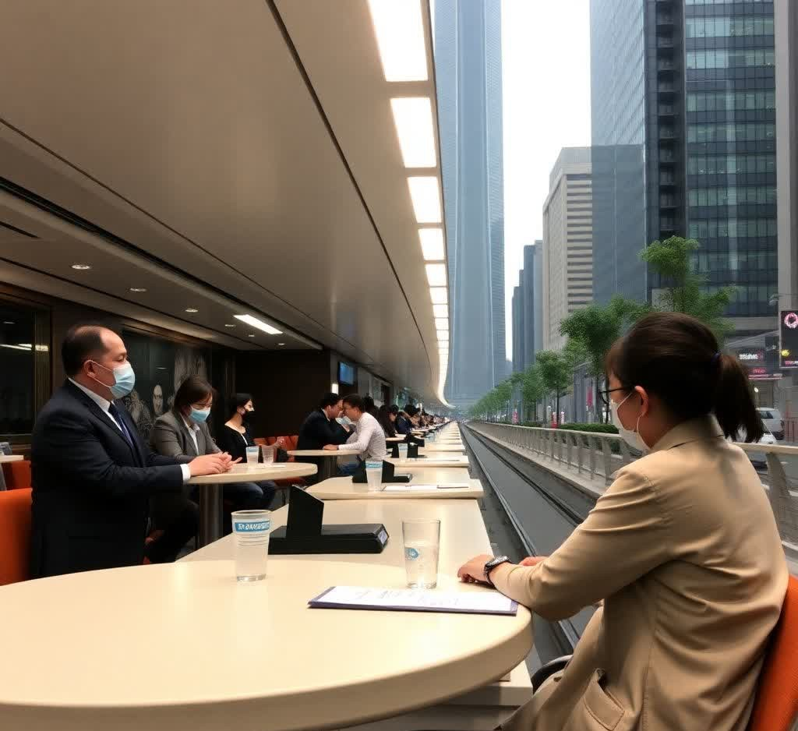

Business
Shanghai’s Financial Boom: Record Trading, Green Finance, and Digital Yuan Innovation
Shanghai’s financial district is witnessing rapid growth, with the Shanghai Stock Exchange reporting record trading volumes. The city is emerging as a major hub for green finance and digital yuan experimentation, attracting investors globally.
Sports
Shanghai’s Sports Revival: Sharks’ Playoff Comeback and Youth Fitness on the Rise
The Shanghai Sharks have made a dramatic return to the playoffs. Youth sports leagues are gaining momentum in schools, and new government-funded sports complexes are opening to promote community health and fitness.
Food

Shanghai’s Culinary Scene Heats Up: Fusion Flavors and Global Gourmet Appeal
From soup dumplings to haute cuisine, Shanghai’s culinary diversity is on full display. International chefs are teaming up with local talent to present gourmet fusion dishes, drawing food lovers from across the world.
Weather
Shanghai on Storm Watch: Heavy Rains Expected as Coastal System Approaches
Shanghai is bracing for heavy rainfall due to a tropical system moving in from the coast. Emergency services are on alert, and citizens are advised to stay indoors during peak storm hours this weekend.
Education

Shanghai’s Education Leap: Global Partnerships, Early Coding, and Smart Classrooms
Shanghai universities are launching international partnerships, and coding is being introduced at the primary level. The government continues its efforts to modernize classrooms with AI-driven tools and smart learning environments.
Current Affairs
Shanghai’s Urban Future: Carbon Goals and Infrastructure Projects Shape City Council Agenda
Debates over urban development and carbon neutrality dominate city council discussions. Infrastructure projects, including a new metro line, are underway to meet the needs of Shanghai’s growing population.
Entertainment
Shanghai’s Cultural Spotlight: Global Cinema and Traditional Theater Light Up the City
The Shanghai Film Festival is bringing global cinema to the city with critically acclaimed premieres. Street performances and traditional theater are also seeing a revival in tourist-favored districts like The Bund and Xintiandi.
Health
Shanghai’s Health Push: Mental Wellness and Elderly Care Take Center Stage
Public health campaigns in Shanghai are focusing on mental well-being and elderly care. Mobile health clinics have been deployed in suburban areas to provide basic healthcare access to under-served communities.
Technology

Shanghai’s Tech Frontier: Quantum Leaps, Autonomous Transport, and 5G Expansion
Tech giants are showcasing their latest innovations at the Shanghai Tech Expo, from quantum computing to autonomous transport. The city is investing heavily in 5G infrastructure and AI research institutions.
Lifestyle
Shanghai’s Lifestyle Shift: Fashion, Wellness, and a Greener Urban Vibe
Shanghai’s cosmopolitan lifestyle is evident in its fashion-forward streets, wellness spas, and boutique cafes. A surge in urban gardening and cycling culture reflects the city's shift toward a greener, more mindful way of living.